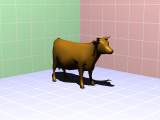

./
visgrpovraygrid__define.pro
object graphics
includes main-level programA grid represents a plane with a grid pattern on it.
See the following for a discussion of how the grid is implemented in POV-Ray:
http://tinyurl.com/4so8do
Examples
The following creates a light blue plane with while grid lines at y = ymin
with grid lines every 0.25 data units:
plane = obj_new('VISgrPOVRayGrid', $
gridline_thick=0.05, $
color=[200, 200, 255], $
gridline_color=[255, 255, 255], $
grid_size=[0.25, 0.25], $
plane=[0, 1, 0, -ymin])
See the example attached to the end of this file as a main-level program
(only available if you have the source code version of this routine):
IDL> .run visgrpovraygrid__define
This should produce:

Class description for visgrpovraygrid
Inheritance
- IDLGRPOLYGON
- visgrpovrayobject
All ancestor classes: IDLGRPOLYGON IDLGRGRAPHIC IDLGRCOMPONENT IDLITCOMPONENT visgrpovrayobject
Properties
- gridline_thick get set init
thickness of grid lines, 1.0 is the width of the grid cell
- bottom get set init
set to paint the grid lines on the other side of the plane; if the grid lines do not show up on the plane, use /BOTTOM
- _extra set init
- gridline_shift get set init
amount to shift the grid lines
- plane get set init
equation of the plane [a, b, c, d] in the form:
ax + by + cz + d = 0- grid_size get set init
two-element array which is the size of the grid
- _ref_extra get
- gridline_color get set init
color of grid lines as an RGB triplet
Other file information
- Todo:
* Add an IDL representation of the grid
Routines
visgrpovraygrid::getProperty, plane=plane, bottom=bottom, gridline_color=gridline_color, gridline_thick=gridline_thick, gridline_shift=gridline_shift, grid_size=grid_size, _ref_extra=_ref_extraGet properties.
visgrpovraygrid::setProperty, plane=plane, bottom=bottom, gridline_color=gridline_color, gridline_thick=gridline_thick, gridline_shift=gridline_shift, grid_size=grid_size, _extra=_extraSet properties.
visgrpovraygrid::cleanupFree resources.
result = visgrpovraygrid::init(plane=plane, bottom=bottom, gridline_color=gridline_color, gridline_thick=gridline_thick, gridline_shift=gridline_shift, grid_size=grid_size, _extra=_extra)Create a POV-Ray grid object.
visgrpovraygrid__defineDefine instance variables.
Routine details
topvisgrpovraygrid::getProperty
visgrpovraygrid::getProperty, plane=plane, bottom=bottom, gridline_color=gridline_color, gridline_thick=gridline_thick, gridline_shift=gridline_shift, grid_size=grid_size, _ref_extra=_ref_extra
Get properties.
Keywords
- plane
equation of the plane [a, b, c, d] in the form:
ax + by + cz + d = 0- bottom
set to paint the grid lines on the other side of the plane; if the grid lines do not show up on the plane, use /BOTTOM
- gridline_color
color of grid lines as an RGB triplet
- gridline_thick
thickness of grid lines, 1.0 is the width of the grid cell
- gridline_shift
amount to shift the grid lines
- grid_size
two-element array which is the size of the grid
- _ref_extra
topvisgrpovraygrid::setProperty
visgrpovraygrid::setProperty, plane=plane, bottom=bottom, gridline_color=gridline_color, gridline_thick=gridline_thick, gridline_shift=gridline_shift, grid_size=grid_size, _extra=_extra
Set properties.
Keywords
- plane
equation of the plane [a, b, c, d] in the form:
ax + by + cz + d = 0- bottom
set to paint the grid lines on the other side of the plane; if the grid lines do not show up on the plane, use /BOTTOM
- gridline_color
color of grid lines as an RGB triplet
- gridline_thick
thickness of grid lines, 1.0 is the width of the grid cell
- gridline_shift
amount to shift the grid lines
- grid_size
two-element array which is the size of the grid
- _extra
topvisgrpovraygrid::init
result = visgrpovraygrid::init(plane=plane, bottom=bottom, gridline_color=gridline_color, gridline_thick=gridline_thick, gridline_shift=gridline_shift, grid_size=grid_size, _extra=_extra)
Create a POV-Ray grid object.
Return value
1 for success, 0 for failure
Keywords
- plane
equation of the plane [a, b, c, d] in the form:
ax + by + cz + d = 0- bottom
set to paint the grid lines on the other side of the plane; if the grid lines do not show up on the plane, use /BOTTOM
- gridline_color
color of grid lines as an RGB triplet
- gridline_thick
thickness of grid lines, 1.0 is the width of the grid cell
- gridline_shift
amount to shift the grid lines
- grid_size
two-element array which is the size of the grid
- _extra
File attributes
| Modification date: | Thu Jan 29 15:38:38 2009 |
| Lines: | 322 |
| Docformat: | rst rst |